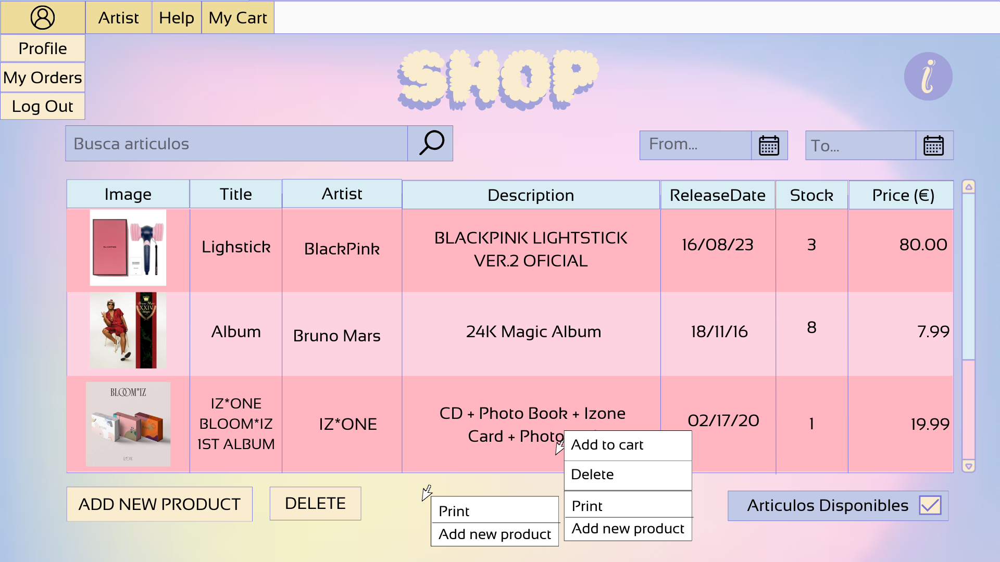

Gestión de Tienda: Ayuda
Descripción general
Esta ventana permite realizar las operaciones de mantenimiento básico de la tienda de productos de Fanetix. El administrador podrá mediante los controles de los que dispone la ventana crear, modificar y eliminar los diferentes productos de la aplicación. Así mismo podrá generar un informe que contiene un listado de todos los productos de la aplicacion.
Operaciones
Crear productosPara crear un producto podrá hacerlo de 2 maneras o bien con el botón Add Product o bien dando click derecho en la pantalla pulsando en el menu de contexto la opcion con el mismo nombre. Esto creará de base un producto nuevo con valores de base. Si no se produce ningún error, se creará el producto y aparecerá en la tabla de productos que se muestra en la ventana.
Modificar datos de el productoPara modificar los datos de un producto primero deberá hacer doble click en la variable que se quiere modificar. Se tendrá que tener en cuenta que se tendrá que cumplir las diferentes validaciones que se han establecido. Una vez realizado el cambio deberá pulsar el botón "ENTER", en caso de querer cancelar la modificacion se podrá hacer mediante el botón "ESC" o pulsando fuera de la variable editada.
Si no se produce ningún error, se modificarán los datos del productos y los datos actualizados del producto aparecerán en la tabla de productos que se muestra en la ventana.
Eliminar productosPara eliminar un usuario deberá seleccionar el usuario a borrar haciendo click en fila deseada de la tabla de usuarios. A continuación, pulse en el botón Eliminar, y se le solicitará confirmación para eliminar el usuario. Si confirma el borrado y no se produce ningún error se eliminará el usuario y se actualizará la tabla de usuarios que se muestra en la ventana.
Imprimir listado de productosPulsando el botón Imprimir se abrirá una ventana donde puede ver un documento
que contiene un listado de los usuarios que existen en la aplicación:

Mediante los botones de la parte superior de la ventana podrá imprimir o almacenar dicho informe.
Pulsando el botón Salir se cerrará la aplicación.
AyudaPulsando el botón Ayuda verá este documento de ayuda.